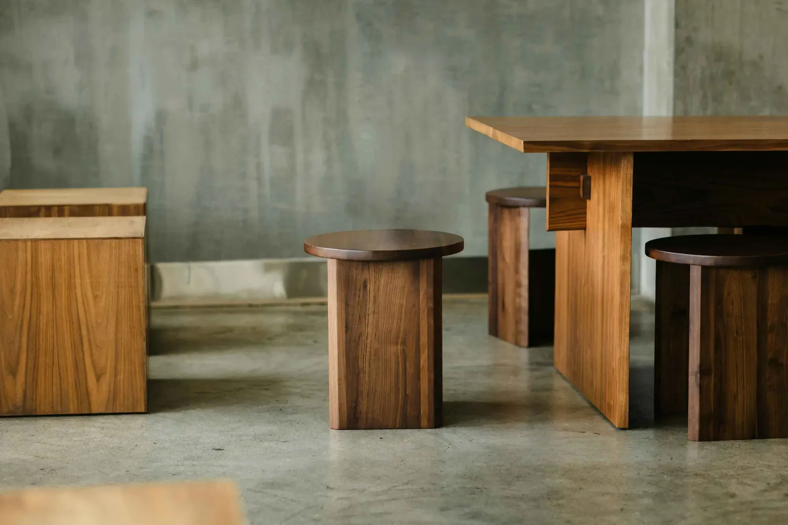
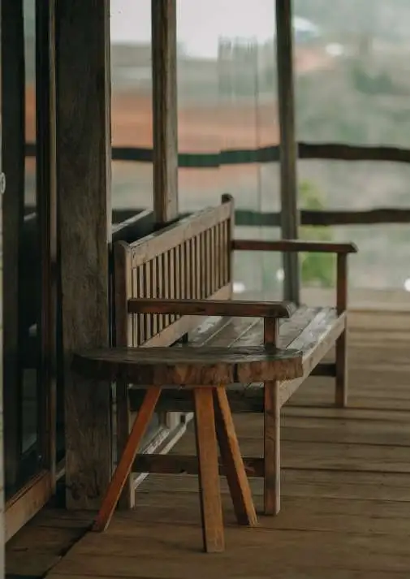
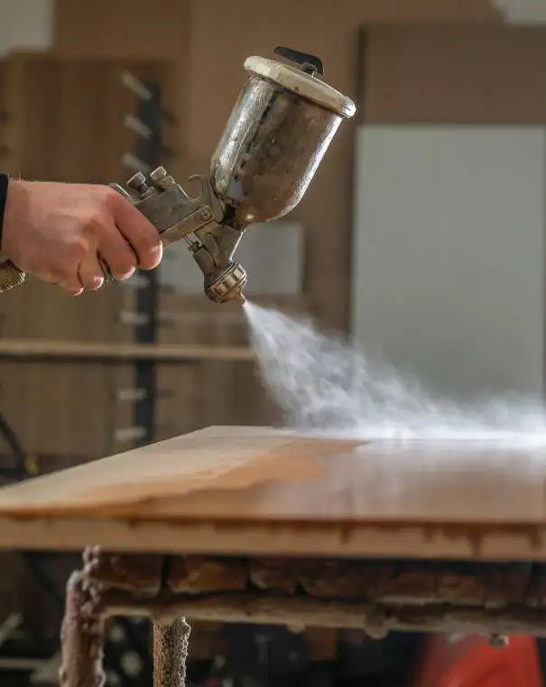

Premium finishing options for your wardrobe or furniture piece
Discover our premium finishing options for your furniture piece
Choose from versatile OSMO oil and wax finishes, known for their durability and protection against grease, dirt, and water. Ideal for both veneered and solid wood furniture, OSMO offers a variety of sheens and tints to suit your preferences.
Alternatively, explore our range of lacquers, including our preferred brand MORRELLS, renowned for its superior protection and flawless finish. Select from low, medium, or high sheens to enhance the natural beauty of your furniture


Painted finishes
We employ a technique that allows us to paint furniture in components rather than as a whole, resulting in a smoother finish without brush or roller marks. Moreover, we utilize an Airless Sprayer instead of traditional rollers or brushes, ensuring a far superior finish for our customers.
Choose any color or sheen, with options from any paint brand. Many clients prefer hand-painted finishes for their durability and hard-wearing nature. For a more artisanal touch, brush marks can be added on the final top coat to achieve a handcrafted feel.